Energía
Amarillo
25%
HEX #FFFA0F
RGB 255 · 250 · 15
12,2:1 con tinta
Manual de marca y sistema de diseño · v1.0 · octubre 2026
Todo lo que define cómo se ve Progreso Urbano Consultores: el logo, los colores, las letras, las formas, la fotografía y cómo se aplican en LinkedIn, documentos, presentaciones y web. La segunda parte es el sistema de diseño, para quien construya la web o una app.
01 · Logo
Progreso Urbano: la P va primero y queda encima. Su lóbulo cruza sobre la U, cuyo fuste derecho sube hasta la misma altura que la P. El lenguaje se llama «Ascenso»: trazo grueso, curvas que nacen de círculos concéntricos y un corte de un módulo bajo la P.
Retícula de 28 px. El trazo mide 2 módulos. La U baja 4 px bajo la línea base como compensación óptica.
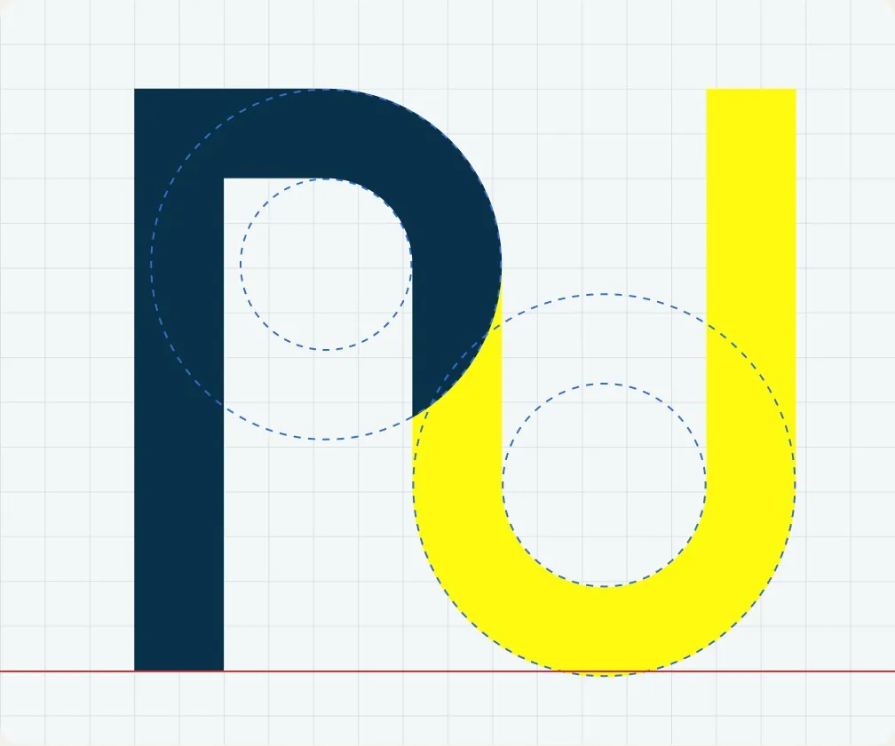
La versión principal vive sobre el degradado Firma. Sobre fondo claro, la U pasa a petróleo. Las bandas curvas son la textura de la marca.
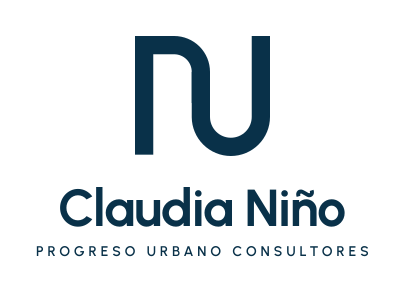
02 · Color
El amarillo es la energía y se usa con generosidad; la tinta respalda sin dominar. El porcentaje indica cuánto se usa cada color en una pieza.
Energía
25%
HEX #FFFA0F
RGB 255 · 250 · 15
12,2:1 con tinta
Institucional
20%
HEX #093149
RGB 9 · 49 · 73
13,5:1 con blanco
Puente
10%
HEX #AED0C9
RGB 174 · 208 · 201
8,2:1 con tinta
Fondo
35%
HEX #F3F2EA
RGB 243 · 242 · 234
12,1:1 con tinta
Apoyo
5%
HEX #1A6E81
RGB 26 · 110 · 129
5,8:1 con blanco
Neutro
5%
HEX #DAD7C8
RGB 218 · 215 · 200
9,4:1 con tinta
Del petróleo profundo a la luz amarilla, siempre pasando por agua para no ensuciar el amarillo. Curvas suaves y el amarillo en el extremo luminoso.
Fondo principal de portadas, banners y héroes web. La energía sube desde la esquina como un amanecer sobre la ciudad.
Lineal vertical. Fondos web, secciones y diapositivas.
Nace en una esquina y se vuelve agua. Tarjetas destacadas y versiones claras.
Angular, dentro de la curva de la U. Para elementos gráficos, no para fondos.
Sutil, para tarjetas de datos e interfaz. El amarillo solo como brillo en una esquina.
03 · Tipografía
Urbanist da forma a titulares y logotipo con la misma geometría circular de la U y la P. Google Sans Flex asegura una lectura clara. DM Mono ordena los datos técnicos. Las tres son gratuitas (licencia OFL) y están en la carpeta 03 de Drive.
Aa
Titulares · logotipo · botones
Bold 700 · SemiBold 600 · Medium 500
ABCDEFGHIJKLMNÑOPQRSTUVWXYZ
abcdefghijklmnñopqrstuvwxyz 0123456789
Aa
Textos · interfaz · documentos
Acompañamos a entidades públicas y privadas en cada decisión urbanística, con claridad, cercanía y rigor.
Regular 400 · Medium 500 · SemiBold 600
01
Datos · códigos · cifras
LIC. 11001-2-24-0187
ÁREA 1.240 m²
Regular 400 · Medium 500
Progreso
Progreso
Progreso
Progreso
Progreso
Progreso
1.240 m²
04 · Geometría
Pequeños gestos nacidos de la construcción del logo: círculos, medios y cuartos sobre el módulo de 28 px, con la misma proporción de trazo de la P y la U. Cada forma tiene un significado y puede representar un servicio.
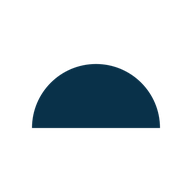
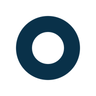
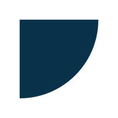
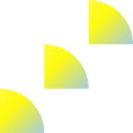
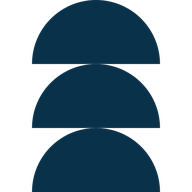
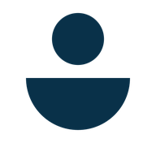
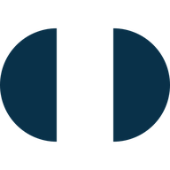
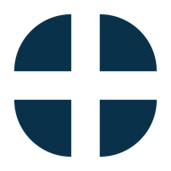
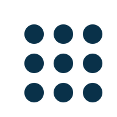
Módulo 28 px · radio interior = 0,5 × radio exterior · solo círculos, medios y cuartos · una sola forma en amarillo por pieza
05 · Elementos gráficos
Dos patrones (las bandas y el patrón Progreso) y los arcos con degradado. Se usan con sutileza: tono sobre tono, una luz por pieza.
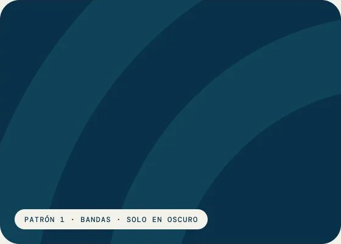
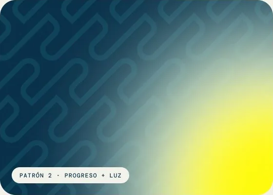
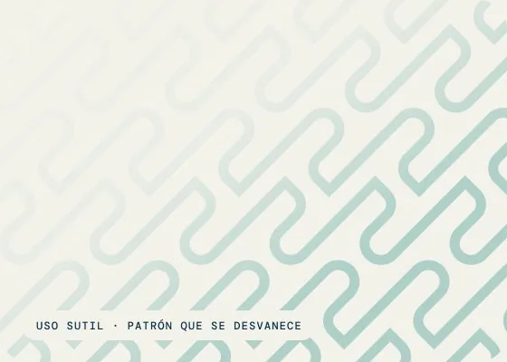
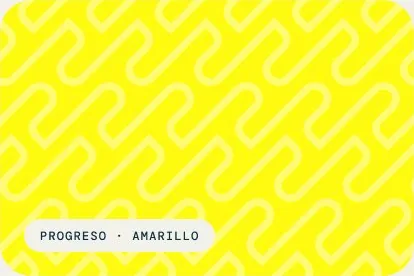
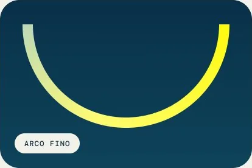
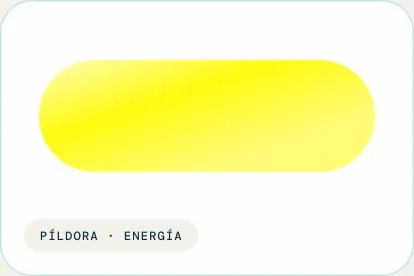
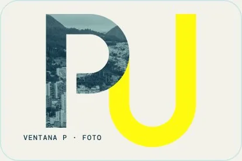
06 · Fotografía
Bogotá en duotono tinta y agua: sobria, profesional y siempre de la marca. Solo ciudad y arquitectura. Los retratos van en color natural.
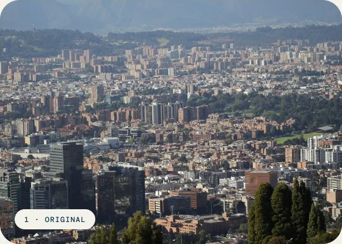
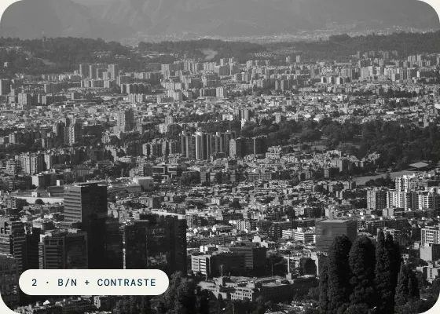
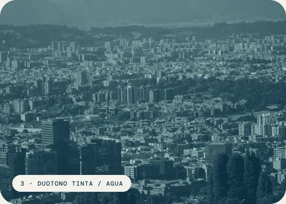
La receta (Figma, Photoshop o Canva)
Imagen · saturación −100 · contraste +50
Exposición −10 · luces +10
Capa 1 · tinta #093149 · Screen 100 %
Capa 2 · agua #AED0C9 · Multiply 100 %
Para poner texto encima, suma un velo o el degradado Firma.
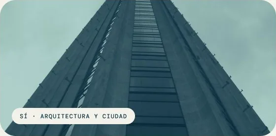
Evitar
07 · Aplicaciones
Perfil personal de Claudia Niño. La foto de perfil lleva la curva amarilla de la U; el banner Ciudad funde Bogotá en duotono con el degradado Firma. Los archivos listos para subir están en la carpeta 09 de Drive.
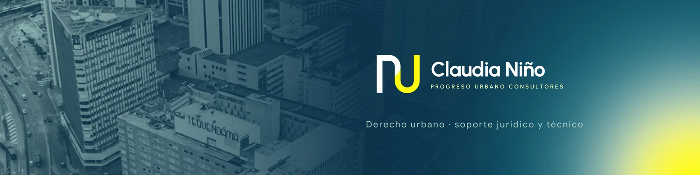
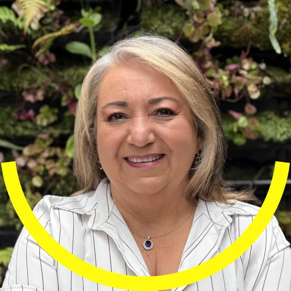
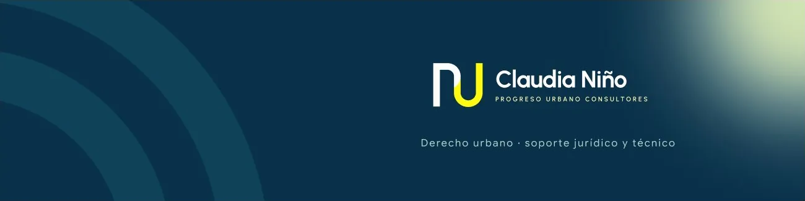
08 · Usos
Documentos sobre papel con una sola luz y una forma protagonista. La tarjeta une el degradado Firma con el patrón sutil.
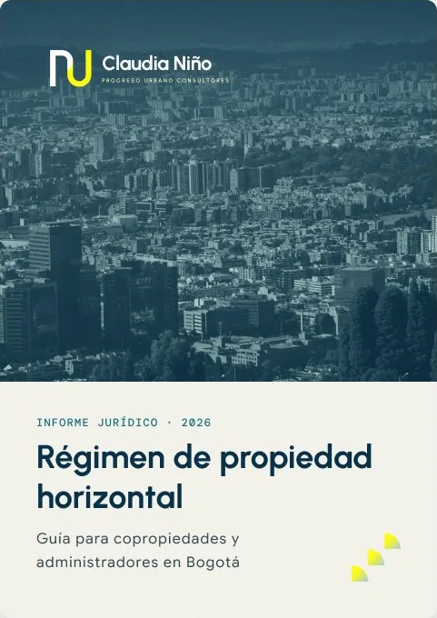
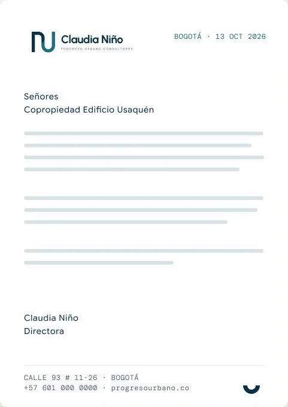
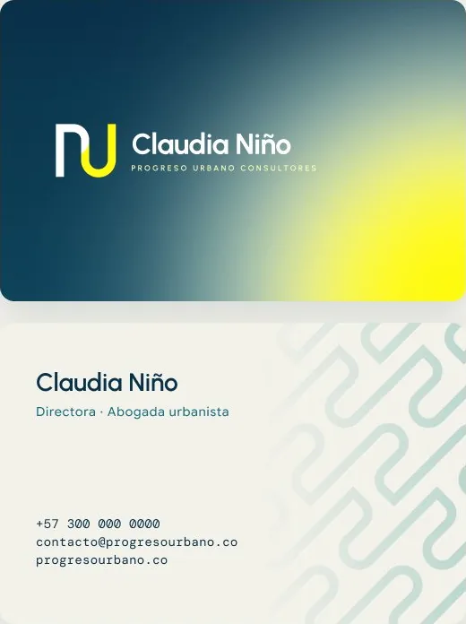
Cómo se comporta el sistema en redes: cifras sobre Firma, fotografía en duotono y la geometría como lenguaje de los servicios. Los teléfonos, correos y cifras son de ejemplo.
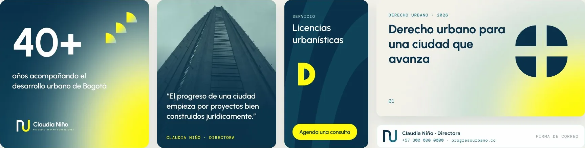
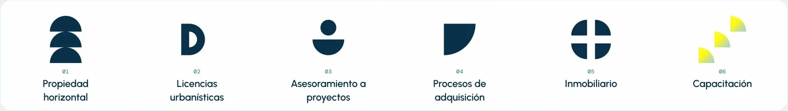
Elegante y silencioso: mucho blanco, una línea de agua y el logo pequeño. Todo lo demás es el texto. La plantilla de Word se hará con los documentos que ustedes compartan.
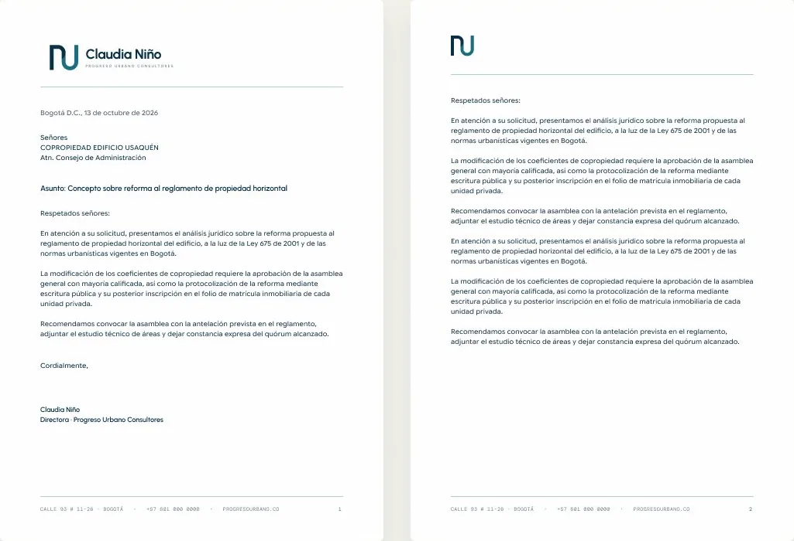
Seis diapositivas tipo en 16:9. Portada y cierre sobre Firma; el contenido vive en papel con una sola foto o forma. La plantilla está en la carpeta 06 de Drive.
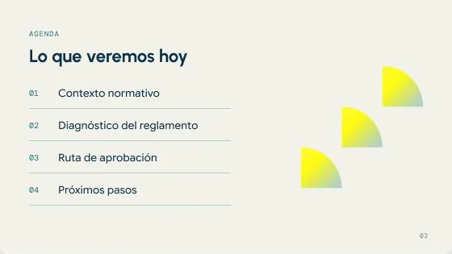
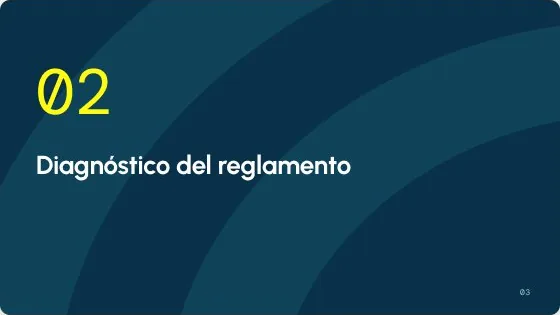
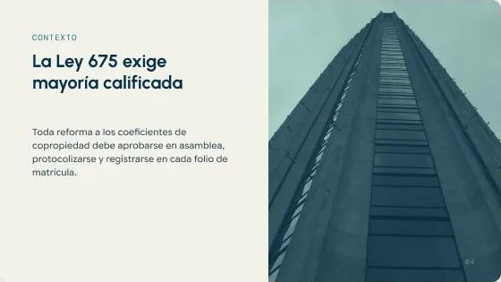
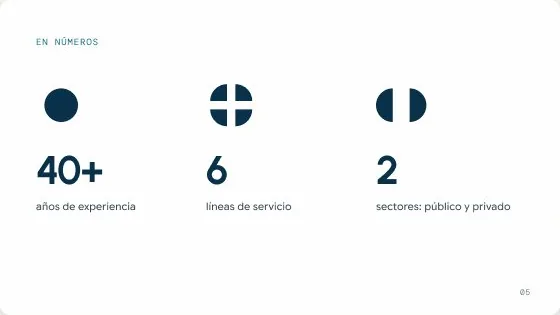
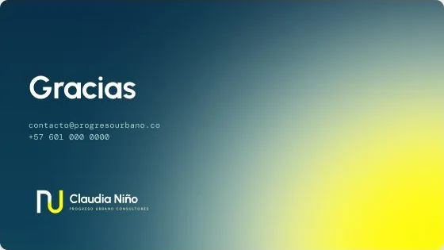
Página de inicio con todas las secciones: héroe con fotografía en duotono, nosotros, servicios, cita sobre degradado Energía, valores y contacto sobre Firma. Servicios, cifras y datos de contacto son de ejemplo.
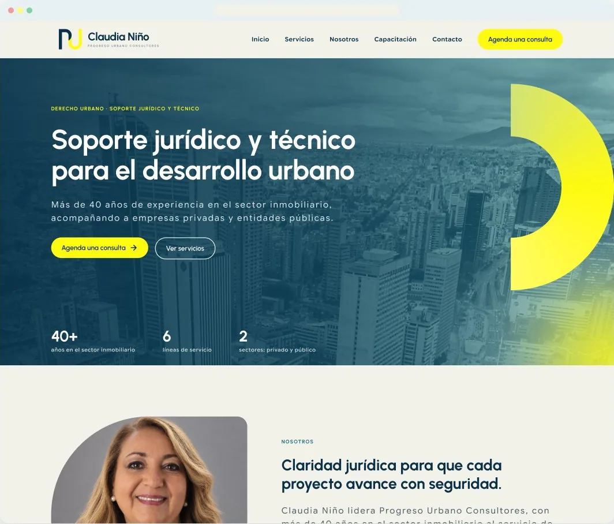
Parte 02
Para quien construya el sitio web, una app o herramientas internas. Son las mismas decisiones de la marca, convertidas en piezas reutilizables con nombre.
09 · Fundamentos
Primitivos de la marca y de estado. Las capas semánticas (modo claro y oscuro) siempre apuntan a estos valores; nunca se usa un HEX suelto.
Amarillo
Petróleo
Neutro
Agua · papel · piedra
Verde
Rojo
Naranja
Azul
Tokens semánticos con modo claro y oscuro. Éxito es verde #1F9D55 y error es rojo #D93030. Advertencia usa naranja para no competir con el amarillo de la marca.
Superficies
Texto y bordes
Estados
Superficies
Texto y bordes
Estados
Urbanist para titulares, logotipo y botones; Google Sans Flex para lectura; DM Mono para datos técnicos (estilos Dato/*).
DestacadoUrbanist Bold · 64/72
Consultoría legal
Titular/H1Urbanist Bold · 48/56
Consultoría legal
Titular/H2Urbanist Bold · 36/44
Consultoría legal clara y cercana
Titular/H3Urbanist SemiBold · 28/36
Consultoría legal clara y cercana
Titular/H4Urbanist SemiBold · 22/30
Consultoría legal clara y cercana
Cuerpo/GrandeGoogle Sans Flex Regular · 20/32
Consultoría legal clara y cercana
Cuerpo/MedianoGoogle Sans Flex Regular · 16/26
Consultoría legal clara y cercana
Cuerpo/PequeñoGoogle Sans Flex Regular · 14/22
Consultoría legal clara y cercana
Etiqueta/MedianaGoogle Sans Flex SemiBold · 14/20
Consultoría legal clara y cercana
Etiqueta/BotónUrbanist SemiBold · 16/24
Consultoría legal clara y cercana
LeyendaGoogle Sans Flex Medium · 12/16
Consultoría legal clara y cercana
SobretítuloUrbanist Bold · 12/16
Consultoría legal clara y cercana
Escala de espaciado de 4 puntos, radios redondeados (la marca es suave y redonda, como la U y la P) y tres niveles de sombra.
Espaciado
Radios
Elevación
Las piezas que se repiten en web y apps. En Figma, todas salen de un componente maestro: se edita el maestro y todo se actualiza.
Botón
Campo de texto
Etiqueta y casilla
Alerta
Iconos
Lucide, de trazo fino y esquinas redondas, en tinta. Se descargan gratis en lucide.dev o con el plugin Iconify en Figma.
Degradados como estilos, tarjetas y chips como componentes, y el logo en su versión clara o invertida según el fondo.
Servicio
Acompañamiento jurídico y técnico en cada trámite.
Servicio
Acompañamiento jurídico y técnico en cada trámite.
Servicio
Acompañamiento jurídico y técnico en cada trámite.
Chip · 4 tonos
Concepto de app para clientes: consultar servicios, seguir un trámite y agendar una consulta, con los mismos componentes. Web, app y herramientas internas comparten color, tipografía, espacio y componentes; cada color cambia de modo claro a oscuro sin rediseñar pantallas; contraste mínimo de 4,5:1 en texto y áreas táctiles de 44 px.
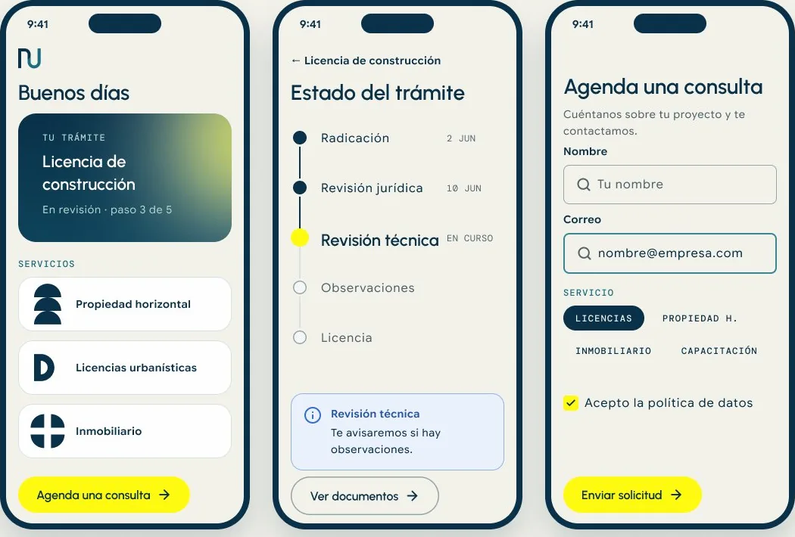